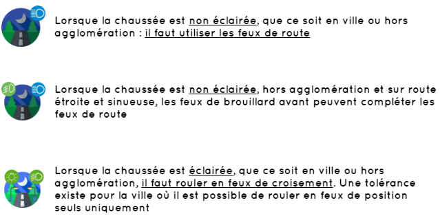
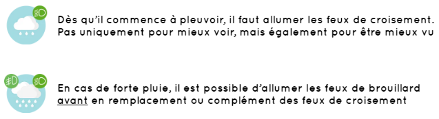

Les d’accidents se produisent plus la nuit que le jour. En effet, la visibilité réduite et le
risque d’endormissement sont des facteurs aggravants.
Nous allons donc nous intéresser aux bonnes pratiques pour conduire de nuit
Deux cas sont à distinguer : une chaussée non éclairée et une chaussée éclairée.
 lorsque les feux de route sont allumés, je dois faire attention à
ne pas éblouir les autres usagers (je passe en feux de croisement si je croise ou
suis un autre véhicule).
Les règles d’utilisation des feux sont identiques pour les tunnels.
Quelques conseils à suivre :
Concernant les feux par temps de pluie, la règle est assez simple :
il ne faut JAMAIS allumer les feux de brouillard arrière par temps de pluie, car ils éblouissent les véhicules qui vous suivent.
Par temps de pluie, l’adhérence du véhicule avec la chaussée est deux fois moins bonne. Concrètement, cela signifie que la distance de freinage est deux fois plus longue que sur un sol sec. Il est donc primordial d’adapter sa vitesse à l’état de la route.
Lorsque beaucoup d’eau s’est accumulée sur la chaussée et que les pneus ne parviennent plus à évacuer l’eau, ceux-ci peuvent ne plus être en contact avec la chaussée : c’est l’aquaplaning. La voiture devient incontrôlable, le conducteur perd le contrôle.
Afin d’éviter ce phénomène, il est important d’adapter sa vitesse et de rouler avec des pneus non usés.
Lorsqu’il pleut, l’humidité peut entraîner la formation de buée ou de givre sur le pare-brise ou les vitres. L’utilisation de la climatisation est alors recommandée, car elle produit un air sec. Il est également efficace d’utiliser le système de désembuage et de dégivrage.
Une règle importante à retenir est que la vitesse du véhicule ne doit pas être supérieure à la visibilité du conducteur pour les 3 égalités suivantes, c’est-à-dire
Quelques conseils à suivre :
Sur route enneigée, l’adhérence du véhicule avec la chaussée est 4 fois moins bonne ! Il faut donc faire particulièrement attention pour éviter les dérapages.
Quelques conseils à suivre :
Bon courage pour votre code !